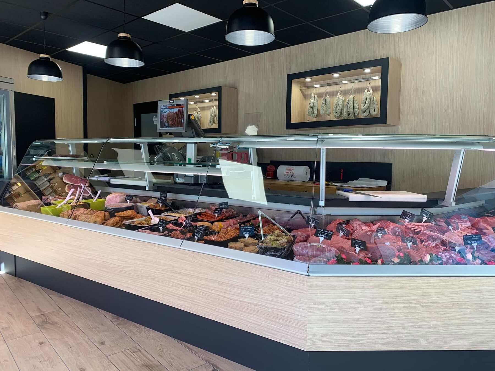
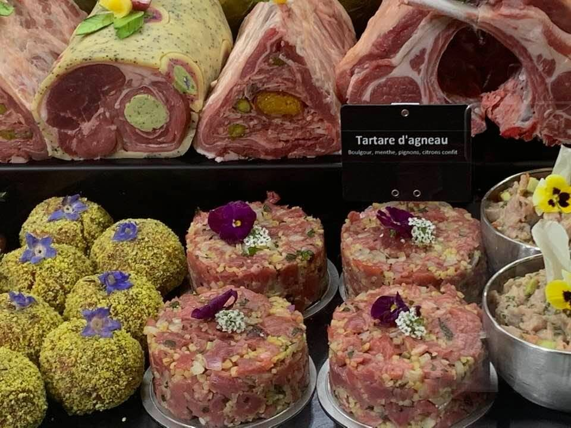
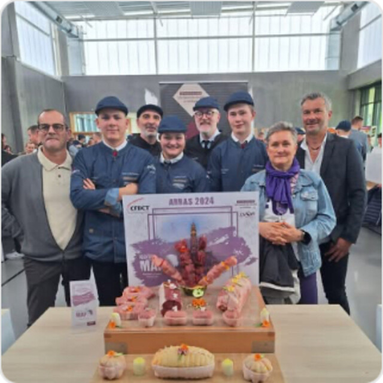
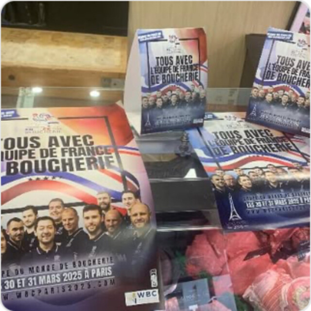

Le métier de boucher, au cœur de Retournac
Viandes choisies, charcuterie artisanale et plats du traiteur. Eric Loubet et son équipe vous accueillent rue du Marché, du mardi au dimanche matin.

Au comptoir
Quatre façons d'entrer dans la boutique. Chaque ardoise vous mène à sa page.
Les viandes
Bœuf d'Aubrac et du Limousin, veau élevé sous la mère, agneau, porc, volailles.
Voir le comptoir →La charcuterie
Terrines, boudins blancs, jambons, saucissons secs. Charcuterie artisanale.
Voir la vitrine →Le traiteur
Plats cuisinés, rôtisserie, accompagnements et carte des fêtes.
Voir la carte →Fin Gras du Mézenc
Le bœuf persillé du massif, un produit de saison, sous appellation.
En savoir plus →
La boucherie qui ne s'en tient pas au steak
Derrière la vitrine, il y a le morceau du jour, mais aussi le rôti farci aux herbes, le tartare d'agneau au boulgour ou la terrine pour l'apéritif. Chaque pièce porte son étiquette, avec son nom et son prix au kilo.
Un doute sur une cuisson ou sur la quantité pour six personnes ? On vous conseille au comptoir, et on ficelle le rôti pour vous.
Découvrir la maisonDes apprentis qui montent sur les podiums
La boutique forme des jeunes au métier. L'un de ses apprentis a reçu le Prix Médicis du meilleur projet professionnel à la finale nationale du concours « Un des Meilleurs Apprentis Bouchers de France ».
En mars 2025, la vitrine s'est parée aux couleurs de l'Équipe de France pour la Coupe du monde de boucherie, à Paris.
Rencontrer l'équipe

Un repas de fête à préparer ?
Chapon, foie gras, rôtis farcis, plats cuisinés et accompagnements. Passez commande à la boutique ou par téléphone, nous nous occupons du reste.